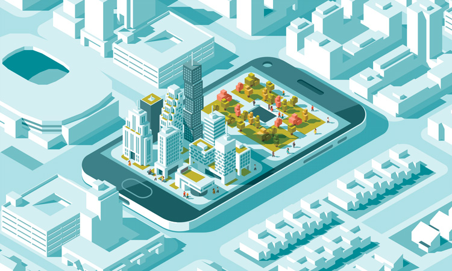

با همکاری پژوهشکده شبکه برق دانشگاه شهید بهشتی، وبینار Concerns about future smart urban mobility در تاریخ ۶ آبان ۱۴۰۰ با سخنرانی محققان داخلی و بینالمللی برگزار خواهد شد.
برای حضور در جلسه از نرمافزار Adobe Connect و لینک ورود به وبینار استفاده کنید. هنگام ورود، در کادر مهمان نام و نام خانوادگی خود را به لاتین وارد کنید.
بازدید ثبتشده: ۷۸٬۳۱۲